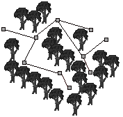
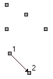
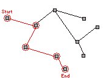

This extension is very similar to the built in path movement in MMF in that it works through connecting ‘nodes’. However, the ‘path’ won’t just be a single path from the first node to the last node. Instead, this extension allows paths to have ‘branches’ ( the path splits into two or more paths ). Rather than the journey be the start of the path to the end of the path, the journey will be a route from one node to another ( either defined by the user or found through the extensions path finding ). Like the MMF path movement, the extension allows different speeds at different segments, but with two different speeds ,depending on direction, per segment ( like if the path is going up a hill, the player would walk down it fast, but walk up it slow ). Below I will go into this with more detail and with pictures to help explain.
The paths can also be saved and loaded from the hard drive. There is also a very useful path editor similar to the one in MMF which will allow you to create paths with ease.
This extension should be very useful for adventure games, like Monkey Island.
| How does it work ? |
The Advanced Path Object works by letting you create a network of paths rather than a single path, like the diagram below.
This path could perhaps be a walk in the forest, where there are objects in your way ( ie. Trees ) preventing you from walking off the path.

Each point is known as a node and has a number ( the first node you make is 1 ). When you create a new node, it will NOT be connected to any other nodes. To connect nodes, you must use the 'connect' action. If you were to connect node 1 with node 2, you could travel from node 1 to node 2, but you couldn't travel from node 2 back to node 1, for the connection is one way.

If you wanted a 2 way connection, you must connect node 2 to node 1 as well.
When you connect two nodes together, you are asked to enter a speed. 1 is the normal speed ( the speed of your object, by default, is 1 pixel per frame ), 2 is twice the normal speed, 0.5 is half the normal speed. The reason for this is that if your travelling through a river in the forest you would travel a lot slower than if you were travelling over a bridge. The 'find path' takes the speed into consideration when finding the shortest path.
When you want your object to move from one node to another, you have to add the nodes into your 'journey'. This can be manually done or you can make the extension 'find' the journey from one node to another. Don't forget you MUST add the very first node to your journey as it represents your start position.
